Get Free NCERT Solutions for Class 11 Maths Chapter 10 Straight Lines Ex 10.2. Class 11 Maths NCERT Solutions are extremely helpful while doing homework. Exercise 10.2 Class 11 Maths NCERT Solutions were prepared by Experienced LearnCBSE.in Teachers. Detailed answers of all the questions in Chapter 10 Maths Straight Lines Class 11 Exercise 10.2 Provided in NCERT Textbook.
- Straight Lines Class 11 Ex 10.1
- Straight Lines Class 11 Ex 10.2
- Straight Lines Class 11 Ex 10.3
- Straight Lines Class 11 Miscellaneous Exercise
- सरल रेखाएँ प्रश्नावली 10.1 का हल हिंदी में
- सरल रेखाएँ प्रश्नावली 10.2 का हल हिंदी में
- सरल रेखाएँ प्रश्नावली 10.3 का हल हिंदी में
- सरल रेखाएँ विविध प्रश्नावली का हल हिंदी में
- Straight Lines Class 11 Notes
- Straight Lines NCERT Exemplar Class 11 Solutions
- RD Sharma Class 11 Solutions Straight Lines
- JEE Main Mathematics Straight Lines Previous Year Questions
You can also save the NCERT Solutions Class 11 Maths images and take the print out to keep it handy for your exam preparation.
Topics and Sub Topics in Class 11 Maths Chapter 10 Straight Lines:
| Section Name | Topic Name |
| 10 | Straight Lines |
| 10.1 | Introduction |
| 10.2 | Slope of Line |
| 10.3 | Various Forms of the Equation of Line |
| 10.4 | General Equation of Line |
| 10.5 | Distance of a Point From a Line |
NCERT Solutions for Class 11 Maths Chapter 10 Ex 10.2
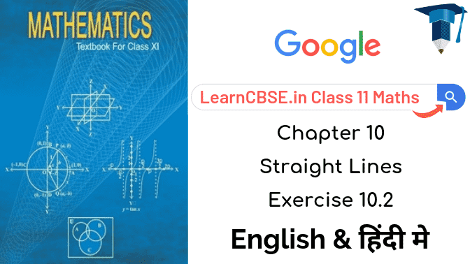
NCERT Solutions for Class 11 Maths Chapter 10 Straight Lines Ex 10.2 are part of NCERT Solutions for Class 11 Maths. Here we have given Class 11 Maths NCERT Solutions Straight Lines Exercise 10.2.
Ex 10.2 Class 11 Maths Question-1
Ans.
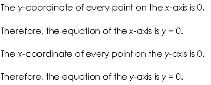
Ex 10.2 Class 11 Maths Question-2

Ans.

Ex 10.2 Class 11 Maths Question-3
Ans.
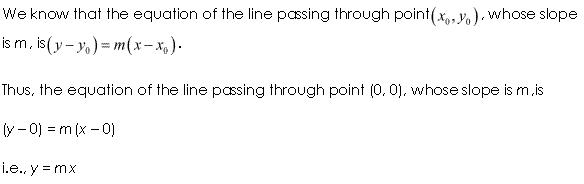
Ex 10.2 Class 11 Maths Question-4
Ans.

Ex 10.2 Class 11 Maths Question-5
Ans.
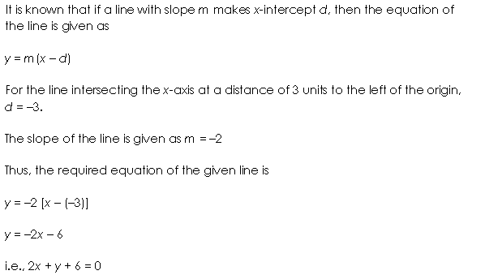
Ex 10.2 Class 11 Maths Question-6
Ans.
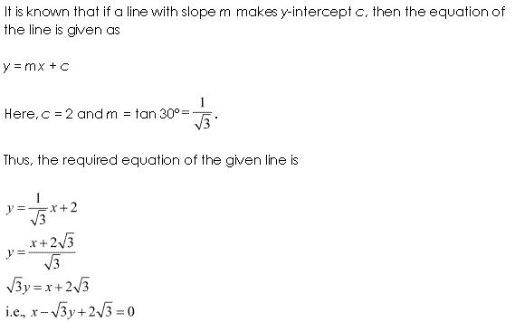
Ex 10.2 Class 11 Maths Question-7

Ans.
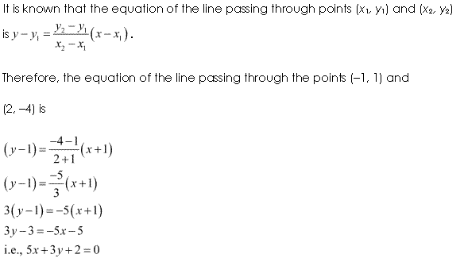
Ex 10.2 Class 11 Maths Question-8
Ans.

Ex 10.2 Class 11 Maths Question-9

Ans.


Ex 10.2 Class 11 Maths Question-10
Ans.
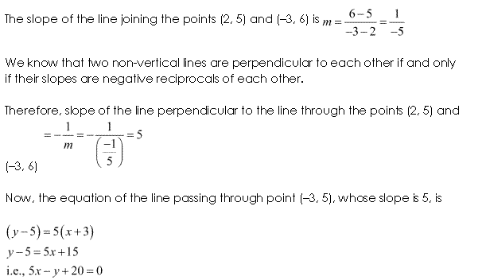
Ex 10.2 Class 11 Maths Question-11

Ans.

Ex 10.2 Class 11 Maths Question-12

Ans.

Ex 10.2 Class 11 Maths Question-13

Ans.


Ex 10.2 Class 11 Maths Question-14

Ans.
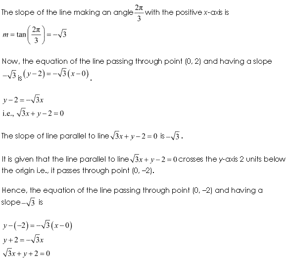
Ex 10.2 Class 11 Maths Question-15
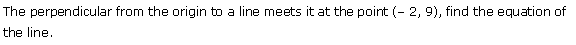
Ans.

Ex 10.2 Class 11 Maths Question-16

Ans.

Ex 10.2 Class 11 Maths Question-17

Ans.
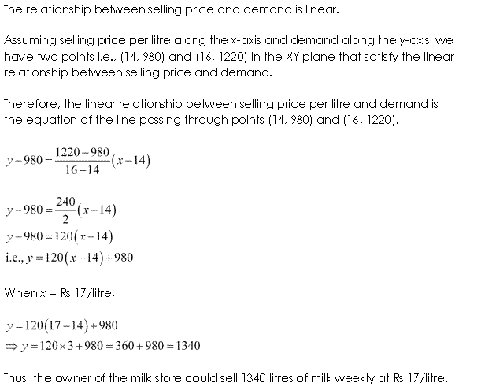
Ex 10.2 Class 11 Maths Question-18
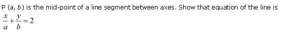
Ans.
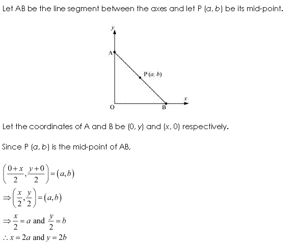

Ex 10.2 Class 11 Maths Question-19

Ans.


Ex 10.2 Class 11 Maths Question-20

Ans.

NCERT Solutions for Class 11 Maths Chapter 10 Straight Lines (सरल रेखाएँ) Hindi Medium Ex 10.2


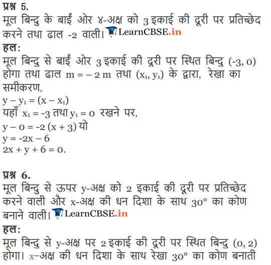
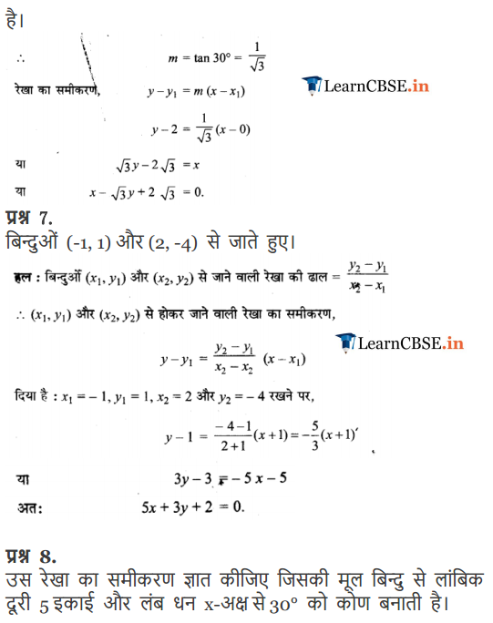
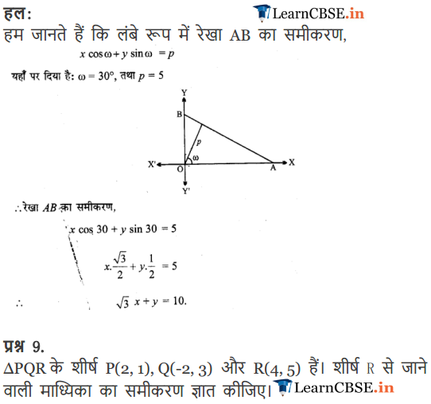
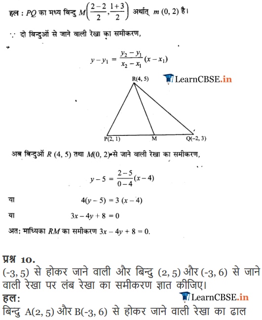
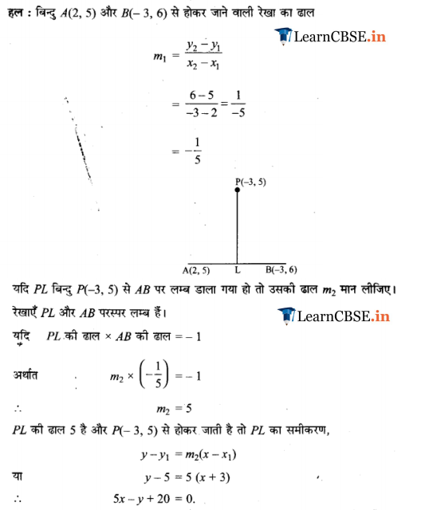
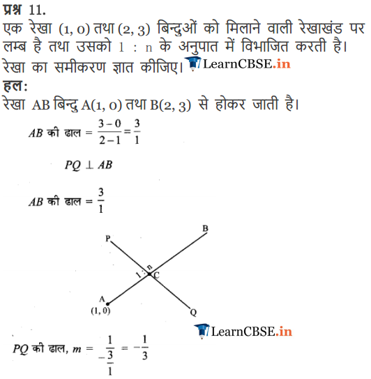
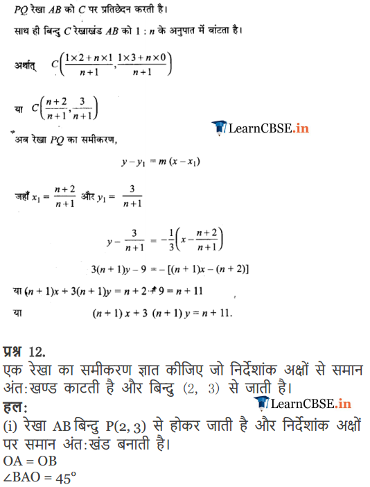
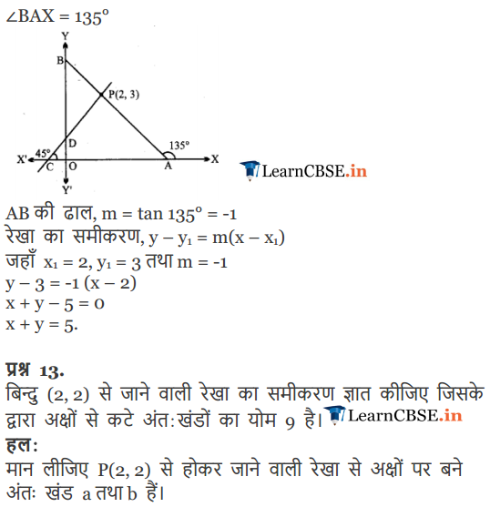
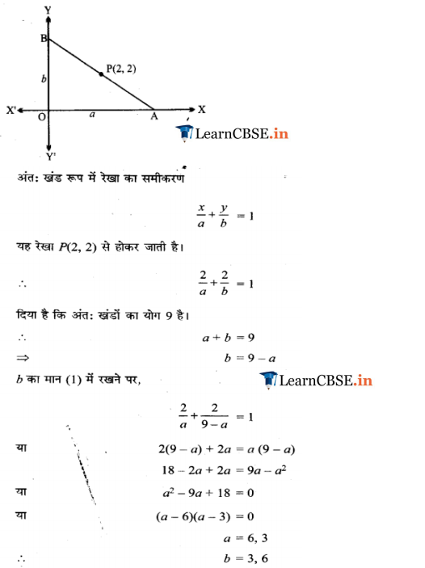
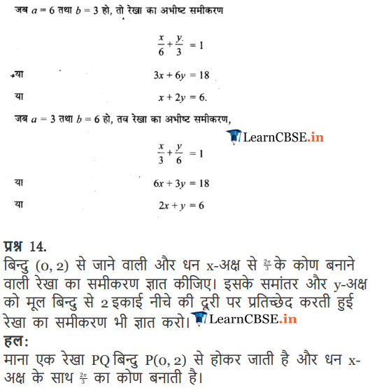
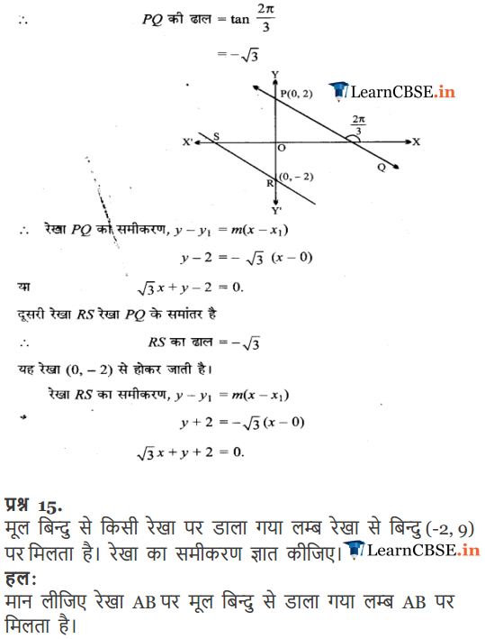
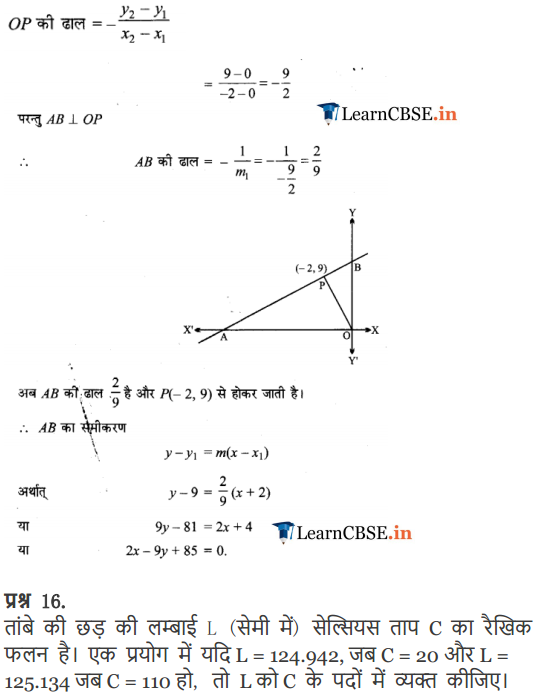

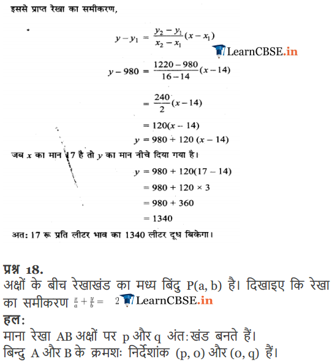
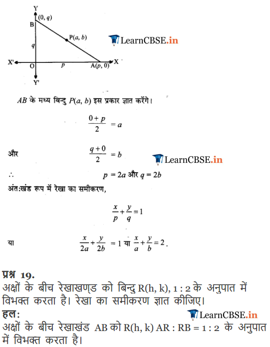

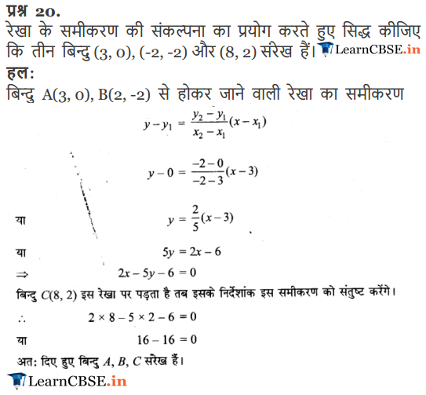
Maths NCERT Solutions Class 11 Maths Chapter 10 Exercise.10.2
Q-1. Write all the possible equations for the two axis, which is x-axis and y-axis.
Q-3. Write the equation for the line which passes through the point (0, 0) with having slope S.
Q-4. Write the equation for the line which passes through ( 3, 3√3 ) which is inclined on x-axis at an angle 75∘.
Q-5. Write the equation for the line which intersects x – axis at a distance 4 units away from the left side of the origin having slope -3.
Q-6. Write the equation for the line which intersects the y – axis at a distance 3 units above the origin which makes an angle 60∘ along the positive direction of the corresponding axis, i.e., x- axis.
Q-7. Write the equation of the line passing through the two points (-2, 2) and (3, -5).
Q-8. Write the equation for the line which is at a perpendicular distance of 7 units from the point (0, 0) and the perpendicular makes an angle of 45∘ along the positive x- axis.
Q-9. Consider a triangle ABC whose vertices are A (3, 2), B (-3, 4) and C (5, 6). Write the equation for the median through one of the vertex of the triangle say, C.
Q-10. Get the equation for the line which is passing through (-4, 5) and which is perpendicular to the line passing through two points (3, 6) and (-4, 7).
Q-11. Consider a line which is perpendicular to the line segment joining the two points (2, 0) and (3, 4) dividing it in 1 : p ratio. Find the equation for such a line.
Q-12. What will be the equation for the line which cuts off intercepts equally on the co-ordinate axes and which passes through the point (3, 4).
Q-13. A line is passing through (3, 3) and making intercepts on the coordinate axes. The sum of the two intercepts is 12. Find the equation of the line.
Q-15. What will be the equation of the line perpendicular to the line from the origin meets at (-3, 10)?
Q-16. Consider a copper rod having length L (in centimeters) which is a linear function of the Celsius temperature which is C. Express L in terms of C, for an experiment. Assume that, L = 127.952 when C = 24, and L = 128.987 when C = 114.
Q-17. A milk store owner observed that, he can sell at least 1000 liters of milk every week at a price of Rs. 15/liter and also, 1240 liters of milk every week at a price of Rs. 17/liter. Consider a linear relation between the demand and estimated selling price, find how many liters would he will sell every week at a cost of Rs.18/liters?
Q-19. The point R (m, n) divides the line segment PQ in the ratio of 2: 3 between both the axes. What will be the equation of the line?
Q-20. Show that the three points (4, 1), (-3, -3) and (11, 5) are collinear by using the concept of the equation of a line.